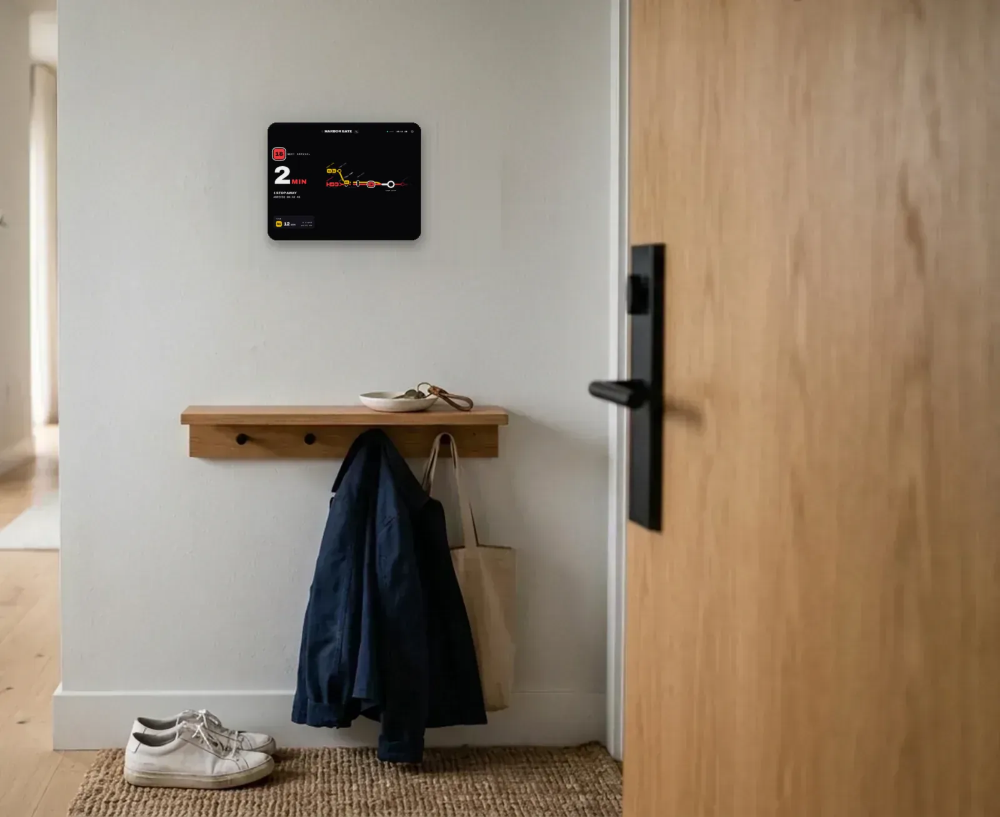
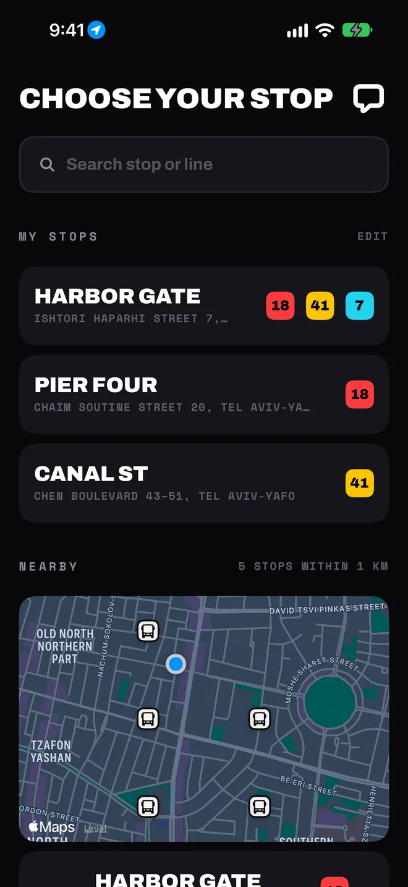
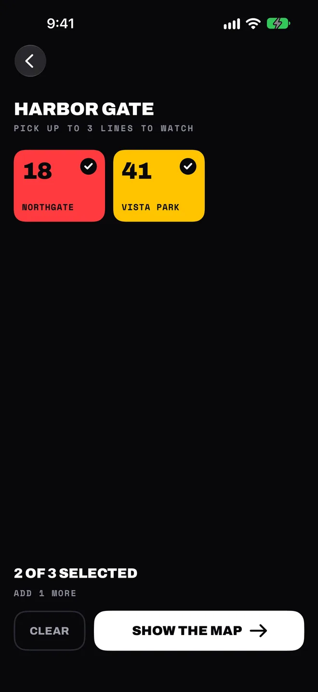
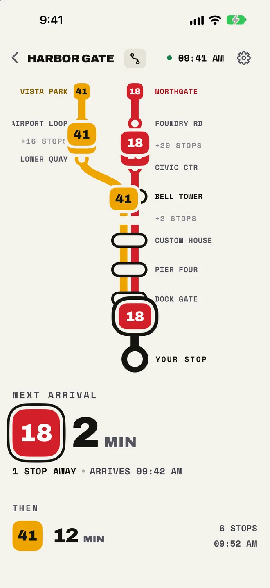
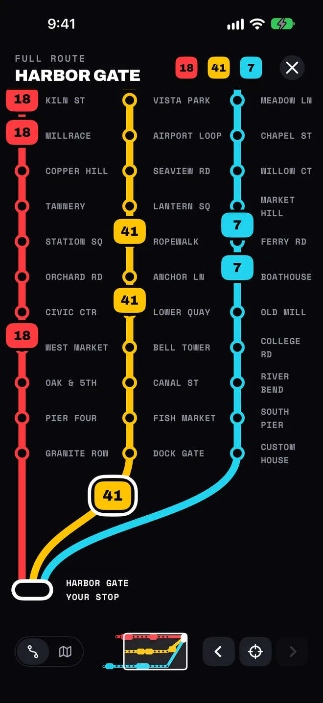
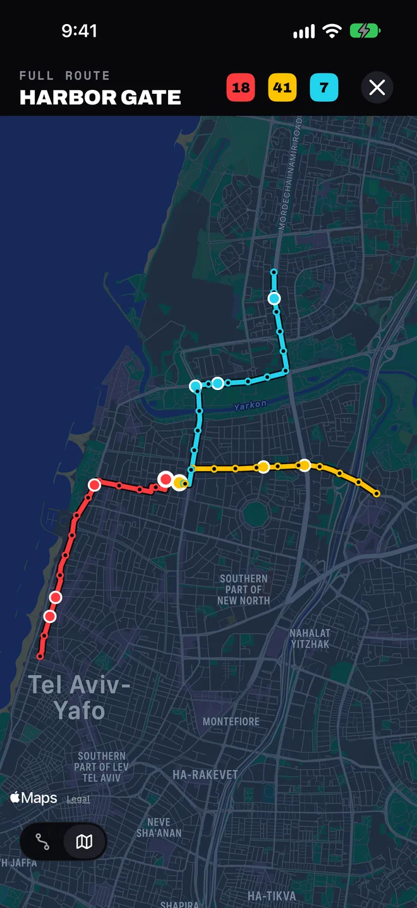
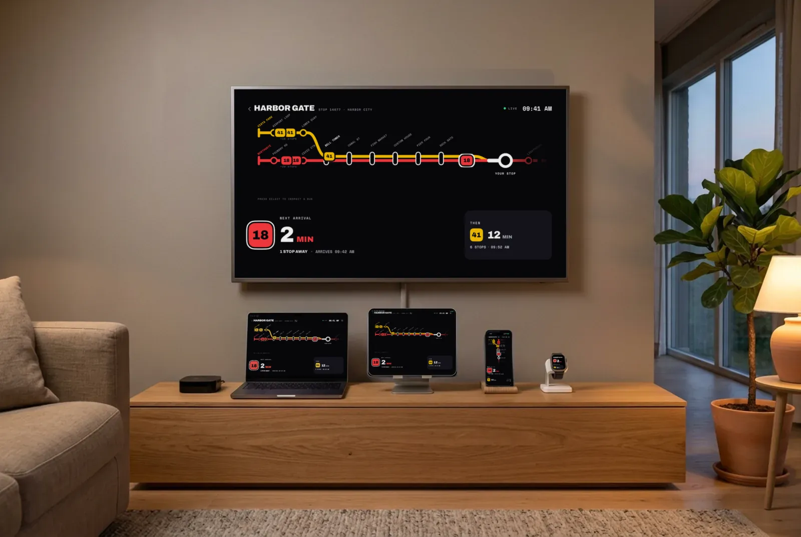

Tabule ke dveřím
Nástěnný režim promění nepoužívaný iPad, iPhone nebo Mac ve stále zapnutou tabuli autobusů do předsíně. Nejbližší autobus zabírá celou výšku obrazovky vedle mapy trasy, tak velký, že ho přečteš i z druhého konce chodby. Mrkni na něj, když už máš boty na sobě, a vyraž přesně s autobusem.
Proč jsem ji vytvořil: starý iPhone na zdi naší kuchyně (anglicky) ›

Nezhasne a neoslňuje
Tabule nenechá obrazovku zhasnout a v noci ji ztlumí, aby neosvětlovala místnost.
Zapnutá, když ji potřebuješ
Vyber dny a hodiny, třeba jen rána v pracovní dny.
Šetrná k obrazovce
Každých pár minut se posune o několik pixelů, aby chránila displej.
Sama se obnoví
Když vypadne připojení, ponechá poslední tabuli, zkusí to znovu a vrátí se, aniž by ses jí musel dotknout.
Nastavíš jednou
Žádný účet a nic k nastavování. Aplikace najde tvůj region podle tvé polohy.
-

1Vyber si zastávku
Nejdřív se zobrazí zastávky v okolí. Můžeš taky hledat podle názvu, kódu zastávky, ulice nebo linky, nebo posunout mapu a hledat v té oblasti.
-

2Vyber si až tři linky
Každá linka má na tabuli vlastní trasu, takže ta, na kterou čekáš, se nikdy neztratí v seznamu.
-

3Sleduj, jak autobusy přijíždějí
Nejbližší autobus, kolik zastávek mu ještě zbývá, a ten po něm. Klepni na kterýkoli autobus na trase a uvidíš, kdy k tobě dorazí.
Domov, práce i škola jsou v Mých zastávkách, vždy jen jedno klepnutí od sebe. Ty nejpoužívanější si připni a ty, které nepotřebuješ, smaž přejetím.
Celá linka na jeden pohled
Tabule vzdálené konce tvých linek skryje. Otevři celou trasu a uvidíš je všechny.

Každá zastávka, od začátku do konce
Každá linka od své první zastávky až k té tvé, s každým autobusem tam, kde právě je. Klepni na zastávku a uvidíš, co tam přijíždí.

Na skutečné mapě
Přepni celou trasu na mapu a tvé linky povedou ulicemi, kudy opravdu jezdí.
Na každé obrazovce v domácnosti
iPhone, iPad, Mac, Apple Watch a Apple TV. Ulož zastávku jednou a máš ji na všech: tvé zastávky se synchronizují přes iCloud a Apple Watch se řídí tvým iPhonem.

Kde funguje
Časy příjezdů pocházejí přímo z otevřených dat, která zveřejňuje každý dopravce nebo organizátor dopravy. Kde sdílí i polohy autobusů, vidíš, jak se autobusy pohybují po trase.
Blízký východ
Evropa
- Norsko
- Švýcarsko (pouze časy příjezdů)
- Londýn (pouze časy příjezdů)
- Vídeň (pouze časy příjezdů)
- Linec (pouze časy příjezdů)
- Rennes
- Oblast Lisabonu
- Turku
- Tampere
- Tallinn
- Vilnius
- Kaunas
- Poznaň
- Gdaňsk
- Krakov
- Brusel
- Lucembursko (pouze časy příjezdů)
- Berlín a Braniborsko (pouze časy příjezdů)
- Norimberk (pouze časy příjezdů)
- Lublaň (pouze časy příjezdů)
- Biskajsko
Pouze časy příjezdů, bez živé polohy autobusů. V Hongkongu ji má MTR Bus.
Data jízdních řádů pro Berlín a Braniborsko: VBB Verkehrsverbund Berlin-Brandenburg GmbH.
Tvoje město ještě není na mapě? Pošli nám zpětnou vazbu z aplikace a napiš, kde jezdíš.
Žádná registrace
Bez účtu
Tvé zastávky a nastavení zůstávají ve tvých zařízeních a na tvém vlastním iCloudu.
Poloha jen při otevřené aplikaci
Slouží k určení regionu a nalezení zastávek v okolí a nikdy se neukládá. Vždycky můžeš místo toho vyhledávat.
Žádné sledování
Hlášení o pádech a statistiky používání pomáhají najít chyby. Nejsou spojené s tvým jménem ani se nepoužívají k reklamě.
Přečti si zásady ochrany osobních údajů, kde se dozvíš, co přesně se odesílá a komu.
Otázky
Je Moje zastávka zdarma?
Ano. Je zdarma na iPhonu, iPadu, Macu, Apple Watch a Apple TV, bez reklam, bez předplatného a bez účtu. Na počítači bez aplikace ji můžeš otevřít i na webu.
Je k dispozici widget?
Ano. Nejbližší autobusy z kterékoli z Mých zastávek si můžeš dát na plochu, zamčenou obrazovku, do klidového režimu nebo na plochu Macu, případně jako komplikaci na Apple Watch. Na Apple TV je ukazuje Top Shelf, aniž bys aplikaci otevíral.
Jaký je rozdíl mezi ŽIVĚ a JÍZDNÍ ŘÁD?
ŽIVĚ znamená, že čas vychází ze skutečné polohy autobusu a z živých předpovědí dopravce. JÍZDNÍ ŘÁD znamená, že pro daný autobus zatím nejsou živá data, takže tabule ukazuje čas podle jízdního řádu. Když data přestanou chodit, tabule označí svá čísla jako zastaralá a řekne ti, kdy dorazila poslední data.
Proč na mapě nevidím pohybující se autobusy?
Někteří dopravci zveřejňují časy příjezdů, ale ne polohy autobusů, takže tabule ukazuje minuty bez autobusů na trase. Jinde to může znamenat, že zrovna žádný autobus nejede, nebo že ten další ještě nezačal posílat svou polohu.
Je to oficiální aplikace dopravce?
Ne. Moje zastávka je nezávislá aplikace. Nevytváří ji ani ji nedoporučuje žádný dopravce ani organizátor dopravy; zobrazuje veřejná data, která zveřejňují, a uvádí jejich zdroj dole v Nastavení.
Můžu ji používat ve svém jazyce?
Aplikace se řídí jazykem tvého zařízení a pro ni samotnou si můžeš vybrat jiný, včetně rozvržení zprava doleva pro hebrejštinu a arabštinu. Widgety, Apple Watch a Apple TV se řídí tvou volbou.
Je k dispozici světlý vzhled?
Ano: Systém, Světlý a Tmavý. V nástěnném režimu zůstává tabule vždy tmavá.
Co se stane, když data dopravce přestanou fungovat?
Aby ti neukazovala špatné časy, živá data pro daný region se pozastaví, dokud zdroj zase nefunguje správně. Tabule se vrátí sama.